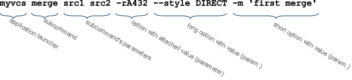

args-inject: Commandline Injection Library
Welcome to args-inject, the ultimate solution for your commandline processing nightmare.
Time to time, almost every programmer needs to write a simple utility which has only a trivial commandline interface. As with anything else, it often happens that the simple utility grows to a complex full-featured application - but still enjoying commandline parametrization.
How does args-inject work ?
Basic concepts
The commandline application is supposed to consist of
- 1..n subcommands (none or one can be default)
- each subcommand takes 0..n parameters, where n can be either fixed or variable (in the sense that user can specify 3 or 5 params without the need to recompile app.)
- order of subcommand parameters usually is important
- each subcommand can be affected by 0..n options (either global or local)
- order of options is not important
- each option accepts 0..n parameters, where n is a fixed number
- order of option parameters is important
A commandline may look like this:

Mapping to java
Following mapping is implemented by AnnottationAwareSetup class:
- subcommand maps to a java class implementing interface ArgsCommand
- annottation @SubCommand can optionally define more properties of the command
- without it, the command is unnamed and can only be used as the default command
- subcommand parameters map to constructor arguments of the command class
- annottation @Param can optionally define more properties of parameter
- command class is supposed to have exactly one public constructor
- option maps to void method of the command class
- annottation @Option defines more properties of the option and is mandatory (only annottated methods are eligible for option mapping)
- options declared on abstract ancestors or interfaces are considered global, others are local by default
- annottation @Global can be used to explicitly control what is global/local
- option parameters map to method arguments of the option method
- annottation @Param can optionally define more properties of parameter
Processing steps
The whole task of processing commandline has following steps:
- setup - generates declaration model defining rules for parsing the commandline
- parse - according to created setup, parses actual commandline arguments, creates a subcommand objects and injects parameters and options to it
- execution - the desired subcommand is invoked
- exception handling - any of above phases may produce errors. This part takes care of their proper display.
Most of these parts is hidden inside args-inject. The only part left up to developer is, the business logic of his program, and very tiny declaration effort on command classes.